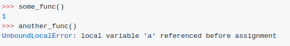

output
설명:
https://docs.python.org/2/reference/datamodel.html 로부터 인용됨
불변의 시퀀스 변경 불가능한 시퀀스 유형의 개체는 일단 생성되면 변경할 수 없습니다. (물체에 다른 객체에 대한 참조가 포함된 경우, 이러한 다른 객체는 변경할 수 있고 수정할 수 있지만, 변경할 수 없는 객체에 의해 직접 참조되는 객체의 집합은 변경할 수 없음)
+= 연산자는 리스트를 in-place로 바꿉니다. 항목 할당은 작동하지 않지만 예외가 발생하면 항목이 이미 제자리에 변경되었습니다.